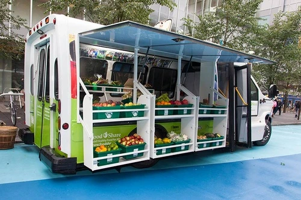
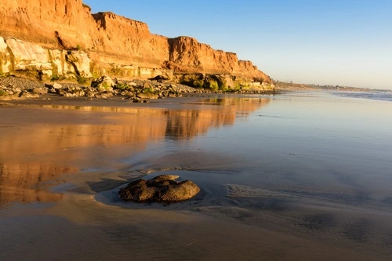
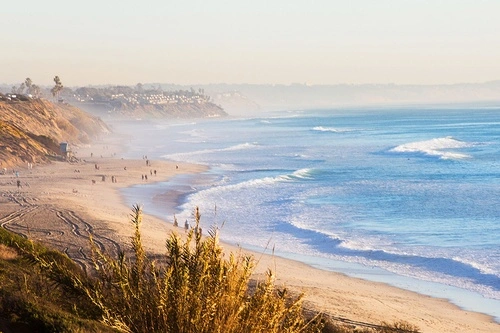

About Bountiful Foods
Come visit our permanent store at Bountiful Foods Tower in Carlsbad, or one of our fruit-mobiles.
The local food movement is gaining momentum in the United States. Across the nation, in both small towns and large cities, individuals are becoming increasingly aware that the freshest and most flavorful produce, dairy, and meats are sourced from their own communities. Farmer's markets are now available in almost every town, allowing people to purchase locally grown produce, meat, dairy, baked goods, and artisanal crafts directly from farmers. This movement is more than just a trend - it has several compelling benefits for farmers, consumers, and society as a whole.
Supporting local farmers helps to sustain small, family-owned businesses and fosters a sense of community pride. Additionally, purchasing locally grown and organic products is healthier for the environment, as it reduces the carbon footprint associated with transporting goods over long distances. By buying local, consumers can be assured of the quality and freshness of their food while also supporting their local economy.

Choosing to purchase locally grown food has several benefits, one of which is the superior taste of fresh produce. When you buy food from a local farmer, you can be confident that it was picked when it was fully ripe, and likely within just a day or two of being sold. In contrast, produce that is shipped long distances to chain stores is often harvested before it is fully ripe in order to prevent spoilage during transportation. As a result, it may be several days or even weeks before it reaches the store shelves. The difference in freshness is readily apparent in the taste of the food. Local, freshly picked fruits and vegetables have a much more vibrant flavor and aroma than those that have been harvested early and shipped long distances. Additionally, locally grown produce is often grown using more sustainable farming practices, which can also contribute to better flavor and nutrition.
Carlsbad in the Coastal of California
Carlsbad, California is a city located in San Diego County, which is just a quick half-hour drive north of Downtown San Diego. However, if you don't have a car or don't feel like driving, don't worry! There's a Coaster station located in the heart of Carlsbad Village that will take you straight to Old Town San Diego or Downtown where you can enjoy a night out or a refreshing margarita. Despite being a small town, Carlsbad Village has a big city vibe with plenty of conveniences. You'll find everything you need in this downtown area, including great restaurants and a lively bar scene.

If you're looking for a coastal escape, Carlsbad Beach Collection properties are perfect for you. Tamarack State Beach is just a stone's throw away, and it's flanked by North Carlsbad Beaches to the north and south. Terramar Beach, a haven for surfers, runs into South State Beach and ends at Ponto Beach on the very southern tip of Carlsbad. Carlsbad State Beach is consistently ranked as one of the top 25 beaches in the country by Trip Advisor.
This family-friendly beach town is a wonderful place to take your kids for a stress-free vacation. Carlsbad Village has all the cultural and culinary experiences of a big city without the chaos of Downtown San Diego or Pacific Beach. So, if you're planning a vacation, Carlsbad Village is definitely the place to be.

Current Weather
in Carlsbad, Ca
|
Current: |
|
32°F |
Partly Cloudy |
|
Wind |
Wind Chill |
Humidity |
|
20 mph |
N/A |
20 % |
3 Day Forecast
|
Day 1 |
0°F |
Cloudy |
|
|
Day 2 |
0°F |
Cloudy |
|
|
Day 3 |
0°F |
Cloudy |